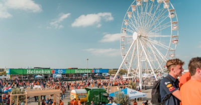

Voor je bij de gate bent is het belangrijk dat al jouw tickets op naam staan. Dit doe je met jouw eigen MyDGP-omgeving account. Op dit ticket staat de rij, het stoelnummer en de gate vermeld die je het snelste toegang geeft tot het circuit. Je kan jouw ticket zowel geprint dan wel digitaal meenemen of in de Dutch GP app zetten (indien tickets zijn gepersonaliseerd).
Re-entry
Re-entry is niet mogelijk. Wanneer je het evenemententerrein verlaat, is het niet mogelijk om weer opnieuw terug te komen. Houd hier dus rekening mee.
Verspreiden van tickets
Alle hoofdboekers zijn verantwoordelijk voor het verspreiden van de tickets. De tickets zijn te downloaden in de MyDGP omgeving. Let op: stuur het ticket naar de juiste persoon. Verkeerd doorgestuurde tickets kunnen niet teruggetrokken worden. Heb jij een weekend ticket? Dan is dit ticket geldig op zaterdag en zondag. Een passe partout is geldig op vrijdag, zaterdag en zondag.
Passe Partout & Weekend tickets
Heb jij een passe partout ticket? Dan is dit ticket geldig op vrijdag, zaterdag en zondag.
Heb jij een weekend ticket? Dan is dit ticket geldig op zaterdag en zondag.
2. Op het terrein
Openingstijden
Het evenemententerrein is op alle dagen geopend van 08.00 uur tot 21.00 uur.
Huisregels
Zoals voor elk evenement gelden er bepaalde huisregels. Zo mag je bijvoorbeeld geen eigen eten en drinken, paraplu’s, grote camera’s en stoeltjes meenemen. Daarnaast is het evenement rookvrij en cashless. Let op! Om veiligheidsredenen zijn fakkels niet toegestaan.
Lockers
Er zijn geen lockers rondom of op het evenemententerrein aanwezig. Eventueel ingenomen items worden weggegooid in daarvoor aanwezige afvalcontainers en niet in bewaring genomen.
Drinken en eten
Het is helaas niet toegestaan om eigen drinken en eten mee te nemen. Er is genoeg aanbod voor eten en drinken op het circuit, zo kom je tijdens de races niks tekort!
Cashless event
Op het gehele evenemententerrein kan nergens met cash betaald worden!
Dutch GP recycle systeem in samenwerking met CM.com
Om samen het circuit schoon te houden, lanceren we het Dutch GP recycle systeem. Je ontvangt de recycle token bij de ingang.
3. Hoe kom je op het circuit?
Tijdens de Dutch Grand Prix is Zandvoort volledig afgesloten voor bezoekers met de auto of motor. Als je toch met de auto wilt komen, maak dan gebruik van de Park+Bike locaties, waarvandaan je met je eigen of gehuurde fiets in ongeveer een half uur naar Zandvoort kunt fietsen. Voor alle fietsers uit de regio of gebruikers van de Park+Bike is het noodzakelijk om vooraf je fietsparkeerplek te reserveren. Er zijn ook een beperkt aantal Park+Ride plekken beschikbaar, maar er geldt ‘vol is vol’."
style="width:100%;max-width:300px">
BELANGRIJKE INFORMATIE OVER JOUW BEZOEK
×

![Het streven van de FOM (Formula One Management) is om in 2030 CO2-neutraal te zijn en de organisatie van de Nederlandse GP draagt daar op allerlei manieren actief aan bij. Zo is er vanaf de eerste editie vol ingezet op het vergroenen van de infrastructuur rondom het CM.com Circuit Zandvoort door bezoekers betere alternatieven dan vervoer met de auto te bieden. Gisteren bleek al dat dit doel ruimschoots is behaald en 0% van de reguliere bezoekers met de auto is gereisd.Vervoersmiddelen als de trein en bus (42%) en de fiets (37%) zijn erg populair.](./Image/Instroom-met-fiets-400x210.jpg)
![Het Formula 1 Heineken Dutch Grand Prix 2022 raceweekend is vandaag feestelijk afgesloten met wederom een fenomenale overwinning van Max Verstappen. In zijn post-race interview bedankte Verstappen zijn fans en vatte zijn gevoel samen als ‘Proud to be Dutch’. De organisatie van de Dutch GP kijkt terug op een zeer geslaagd en succesvol evenement met een recordaantal van 305.000 bezoekers, gemeten over de drie dagen.
Ready for More was het overkoepelende thema van dit jaar, met meer bezoekers, meer entertainment en meer festival. De wens van de organisatie kwam uit.](./Image/20220906_DGP_Max-winst-e1662459419810-400x210.jpg)
![De eerste dag van de Formula 1 Heineken Dutch Grand Prix op Zandvoort is soepel verlopen. Het evenement, met als hoogtepunt de vrije trainingen van de Formule 1, stond in het teken van ‘Super Friday’. Een groot deel van het publiek heeft via Jumbo voor deze dag met korting een ticket kunnen aanschaffen. De supermarktketen, die al jarenlang sponsor is van Max Verstappen, maakt op deze manier de racesport bereikbaar voor jong en oud. Verder blijkt vandaag de in- en uitstroom van bezoekers goed beheersbaar, kwamen er veel mensen met de trein, bus en fiets naar het CM.com circuit Zandvoort en zorgde het Nederlandse entertainment voor een feestelijke sfeer.](./Image/DR_1163-400x210.jpg)
![Zandvoort aan Zee, 3 september 2022 De uitverkochte tweede dag van de Formula 1 Heineken Dutch Grand Prix 2022 is succesvol verlopen. Nadat de laatste vrije training van de Formule 1 rond het middaguur werd verreden, maakten de 105.000 toeschouwers en de coureurs zich op voor een enerverende kwalificatie. Vooraf werd de spanning opgevoerd door een explosieve show van DJ La Fuente. Die show in combinatie met het veroveren van pole position door Max Verstappen in de kwalificatie, bracht de vele Nederlandse fans in extase. Verder blijkt dat van alle reguliere bezoekers van het raceweekend niemand met de auto kwam; het openbaar vervoer en de fiets wordt massaal omarmd.](./Image/A2A5048-400x210.jpg)